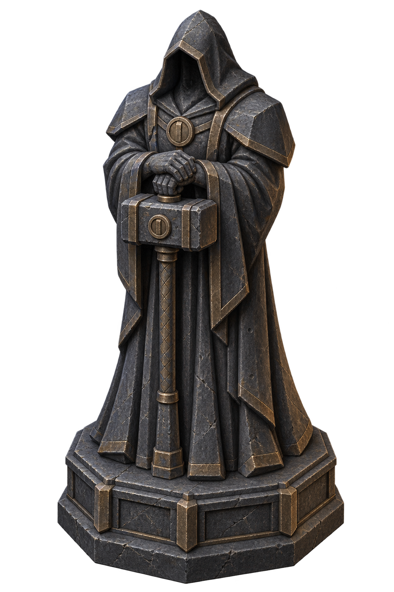

Dökümhane muhafızı · Sanat önerisi
Köprü girişine büyük ve okunabilir bir taş siluet. Bu görsel henüz oyuna eklenmedi; kamera açısı ve yerleşim Unity içinde sınanacak.

360 px240 px160 pxBoyutlar yalnızca önizleme içindir. Oyun kamerasında doğrulanmış ölçüler değildir.
Tam görsel · Üretim ve uygulama notları · Prompt